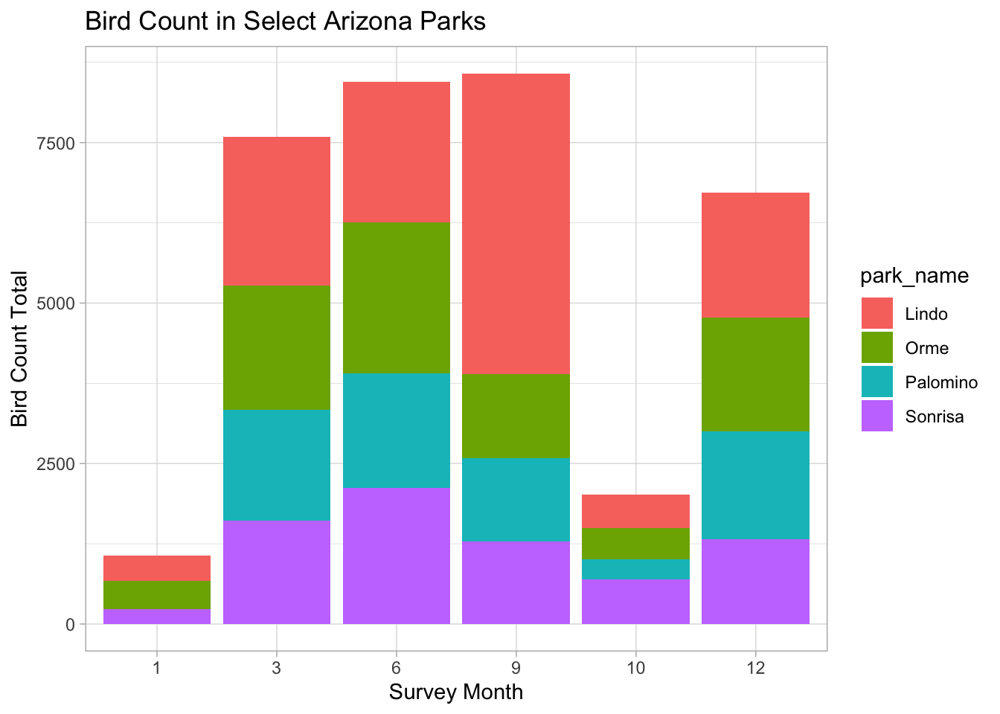

pacman::p_load("tidyverse", "here")bird_joins
Joining Practice
bird_observations <- read_csv(here::here("data", "52_pp52_birds_1.csv"))Rows: 40425 Columns: 9
── Column specification ────────────────────────────────────────────────────────
Delimiter: ","
chr (5): site_id, species_id, distance, notes, direction
dbl (4): survey_id, bird_count, seen, heard
ℹ Use `spec()` to retrieve the full column specification for this data.
ℹ Specify the column types or set `show_col_types = FALSE` to quiet this message.sites <- read_csv(here::here("data", "52_pp52_sites_1.csv"))Rows: 221 Columns: 7
── Column specification ────────────────────────────────────────────────────────
Delimiter: ","
chr (5): site_id, park_code, park_district, park_name, point_code
lgl (2): point_location, park_acreage
ℹ Use `spec()` to retrieve the full column specification for this data.
ℹ Specify the column types or set `show_col_types = FALSE` to quiet this message.surveys <- read_csv(here::here("data", "52_pp52_surveys_1.csv"))Rows: 2004 Columns: 12
── Column specification ────────────────────────────────────────────────────────
Delimiter: ","
chr (4): site_id, observer, wind_dir, notes
dbl (4): survey_id, wind_speed, air_temp, cloud_cover
lgl (1): temp_units
dttm (3): survey_date, time_start, time_end
ℹ Use `spec()` to retrieve the full column specification for this data.
ℹ Specify the column types or set `show_col_types = FALSE` to quiet this message.taxalist <- read_csv(here::here("data", "52_pp52_taxalist_1.csv"))Rows: 259 Columns: 3
── Column specification ────────────────────────────────────────────────────────
Delimiter: ","
chr (2): species_id, common_name
dbl (1): asu_itis
ℹ Use `spec()` to retrieve the full column specification for this data.
ℹ Specify the column types or set `show_col_types = FALSE` to quiet this message.bird_subset <- bird_observations |>
filter(species_id %in% c("BHCO", "RWBL"), # MULTIPLES VALUES USE %IN% PLEASE!!!!!
site_id %in% c("LI-W", "NU-C"))Task 1
- Left join
# left join sites and taxalist dfs
bird_left <- left_join(x = bird_subset, y = sites, by = join_by(site_id)) # keep everything in 'x' and matches with 'y'
bird_left <- left_join(x = bird_left, y = taxalist, by = join_by(species_id))
# piped version
bird_left2 <- left_join(x = bird_subset, y = sites, by = join_by(site_id)) |>
left_join(taxalist)Joining with `by = join_by(species_id)`- Full join
bird_full <- full_join(x = bird_subset, y = sites, by = join_by(site_id)) Task 2
Initial wrangling
# rename notes col in bird_obs df
bird_observations <- bird_observations |>
rename(bird_obs_notes = "notes")
# join bird_obs with taxalist, sites, and survey dfs
bird_all_subset <- left_join(x = bird_observations, y = taxalist) # by species_idJoining with `by = join_by(species_id)`bird_all_subset <- left_join(x = bird_all_subset, y = sites) # by site_idJoining with `by = join_by(site_id)`bird_all_subset <- left_join(x = bird_all_subset, y = surveys) # by site_idJoining with `by = join_by(survey_id, site_id)`# piped version
bird_all_subset2 <- left_join(x = bird_observations, y = taxalist) |>
left_join(taxalist) |>
left_join(sites) |>
left_join(surveys)Joining with `by = join_by(species_id)`
Joining with `by = join_by(species_id, common_name, asu_itis)`
Joining with `by = join_by(site_id)`
Joining with `by = join_by(survey_id, site_id)`# limit cols
bird_all_subset <- bird_all_subset |>
select(survey_date, common_name, park_name, bird_count)Lubridation action
# extract month from survey_date col into a new col
bird_all_subset <- bird_all_subset |>
mutate(survey_month = lubridate::month(survey_date)) |>
mutate(survey_month = as.factor(survey_month)) |> # convert to factor
relocate(survey_month, .after = survey_date) # relocate to after survey_date colFind total number of birds by park and month
bird_by_park_month <- bird_all_subset |>
group_by(park_name, survey_month) |>
summarize(bird_total = sum(bird_count, na.rm = TRUE)) |>
filter(park_name %in% c("Lindo", "Orme", "Palomino", "Sonrisa"))`summarise()` has grouped output by 'park_name'. You can override using the
`.groups` argument.Graph for fun
ggplot(data = bird_by_park_month, aes(x = survey_month, y = bird_total, fill = park_name)) +
geom_col() +
labs(title = "Bird Count in Select Arizona Parks",
x = "Survey Month",
y = "Bird Count Total") +
theme_light() 